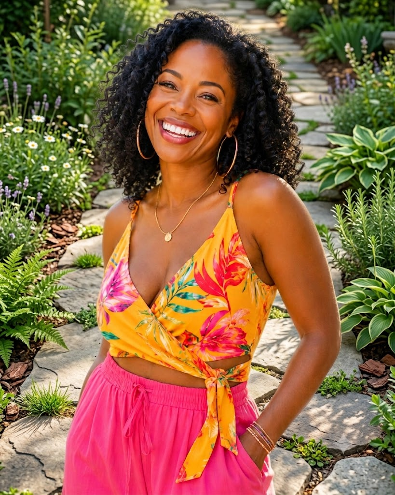

How this started

I grew up listening to people. At home, at the market, on buses, in taxis, over dinner. I was always paying attention to the things people said when they were relaxed enough to tell the truth. That is where this site comes from.
Fuschia & Friends is my notebook, the one I finally decided to open up and share. I keep the places, the names, the little details, the things I want to remember later and the things I think someone else might be glad to know before they go. Some of it is practical, some of it is opinion, and some of it is just the kind of detail that makes a trip feel more alive once you are actually there.
I like travel best when it feels personal. The hotel that gets the breakfast right. The street you only find because someone told you about it. The meal that is better because you went a little further than you planned. The room with the better view, the quieter neighbourhood, the train worth taking instead of the flight, the place that looks ordinary from the outside and turns out to be the one you remember most. Those are the things I care about, and those are the things I write down here.
I also like hearing from people who notice things. Friends, readers, people I have met along the way, the ones who come back from somewhere with a good story and a useful detail tucked into it. That is what makes this site feel like mine, but also like it belongs to a bigger conversation. I ask the questions, I listen, and I keep the good stuff in one place so it does not get lost.
Some people travel to collect stamps. I travel to collect moments, the good ones, the strange ones, the ones that stay with you longer than you expect. This site is where I put them. Travel may be my first love, but writing is a very close second.
Your Friend, Fushia